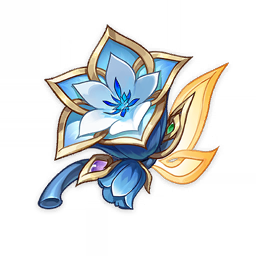

Genshin Impact · Versión 7.2
Análisis del Rol y Escalado
Nicole es un personaje de elemento Pyro originario de Mondstadt / Liyue que utiliza Catalizador y se posiciona en el tier T0 (SS) Support dentro del rol de Soporte & Escudera Pyro Hexerei (Meta 3,000–4,000 ATQ). Su rendimiento en combate gira en torno a este eje principal: Escudo y buff de ATQ escalan al máximo entre 3,000 y 4,000 ATQ.
Para maximizar su aporte en el equipo, la configuración prioritaria combina Heptadas de los Ángeles con el conjunto de artefactos Celestial Gift (4 piezas), respetando la jerarquía de estadísticas ATQ% (3,000–4,000) > Recarga de Energía (150–170%) > ATQ plano. y subiendo sus habilidades en orden: Habilidad Elemental (E) > Definitiva (Q) >>> Ataques Normales.
Mejores Armas
Opciones recomendadas ordenadas por rendimiento según el meta actual y compatibilidad con sus rotaciones:
-
 Heptadas de los Ángeles ★★★★★BiS Firma741 ATQ base, 16.5% ATQ%; hasta +26% Daño al personaje activo y regenera 14 Energía al crear escudo.
Heptadas de los Ángeles ★★★★★BiS Firma741 ATQ base, 16.5% ATQ%; hasta +26% Daño al personaje activo y regenera 14 Energía al crear escudo. -
 Vigía de las Estrellas ★★★★★Alternativa 5★265 ME; al crear escudo otorga +28% Daño al personaje activo durante 15s.
Vigía de las Estrellas ★★★★★Alternativa 5★265 ME; al crear escudo otorga +28% Daño al personaje activo durante 15s. -
 Pergamino Celestial ★★★★★Alternativa 5★ ATQ674 ATQ base y 33.1% ATQ% para maximizar su escudo y buff.
Pergamino Celestial ★★★★★Alternativa 5★ ATQ674 ATQ base y 33.1% ATQ% para maximizar su escudo y buff. -
 Códice de Favonius ★★★★Opción 4★ Batería45.9% ER; genera partículas blancas para el equipo (requiere 40–50% CR).
Códice de Favonius ★★★★Opción 4★ Batería45.9% ER; genera partículas blancas para el equipo (requiere 40–50% CR). -
 Fluencia Impoluta ★★★★Opción F2P Forja565 ATQ base y 27.6% ATQ% para acercarse a los 3,000+ ATQ.
Fluencia Impoluta ★★★★Opción F2P Forja565 ATQ base y 27.6% ATQ% para acercarse a los 3,000+ ATQ.
Mejores Sets de Artefactos
Combinaciones de 4 piezas o mezclas de 2 piezas para maximizar su contribución:
-

Celestial Gift (4 piezas) BiS Hexerei+20% ER (2p); en equipo Hexerei otorga +40% Bono Elemental a Pyro y al elemento activo.
-
 Noblesse Oblige (4 piezas) Alternativa
Noblesse Oblige (4 piezas) Alternativa+20% ATQ para todo el equipo al usar Definitiva.
-
 Scroll of the Hero of Cinder City (4 piezas) Alternativa
Scroll of the Hero of Cinder City (4 piezas) Alternativa+12% Bono Elemental tras reacción cuando no haya otro portador.
Estadísticas Principales y Secundarias
Atributos prioritarios en artefactos para un balance óptimo de daño o soporte:
| Pieza | Estadística Principal |
|---|---|
| Reloj (Arenas) | ATQ% / Recarga de Energía |
| Cáliz | ATQ% |
| Corona | ATQ% |
Prioridad de Subestadísticas
- ATQ% (3,000–4,000) > Recarga de Energía (150–170%) > ATQ plano.
Prioridad de Talentos
Habilidad Elemental (E) > Definitiva (Q) >>> Ataques Normales
Objetivos de Estadísticas (Nivel 90)
Valores de referencia verificados para evaluar el equipamiento de Nicole en nivel 90 con artefactos de 5 estrellas:
| Atributo | Meta Recomendada |
|---|---|
| Vida | 16,500 |
| Ataque | 3,000 – 4,000 ATQ |
| Defensa | 750 |
| Maestría Elemental | 0 |
| Recarga de Energía | 150% (Triple Pyro) / 170% (Doble) |
| Balance Crítico | 40–50% CR solo con Favonius |
Talentos de Combate y Materiales (Nivel 1 al 10)
Habilidades principales de Nicole y desglose exacto de libros, materiales y Mora para mejorar sus talentos:


Composiciones de Equipo Recomendadas
Alineaciones con mayor sinergia elemental y amplificación de daño en el Abismo y Teatro Fantasía:
Hexerei con Varka
Nicole • Varka • Durin • Prune
Equipo Hexerei BiS donde Celestial Gift entrega su bono completo.
Sobrecarga Hexerei
Nicole • Arlecchino • Fischl • Chevreuse
Variante Sobrecarga activando Hexerei con Fischl.
Materiales de Ascensión (Nivel 1 al 90)
Recursos totales requeridos para desbloquear las 6 fases de ascensión de Nicole. Coste total de Mora en ascensiones: 420.000 Mora.


Sinergias y Guías Relacionadas
Explora las fichas de armas, artefactos y materiales de los principales compañeros de equipo para Nicole: